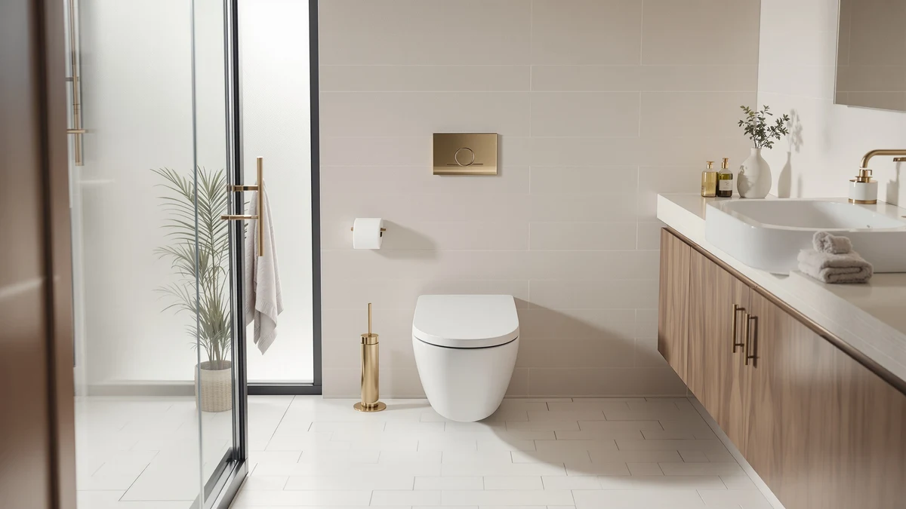

Best One Piece Games (2026)
Prices and picks verified as of August 2026. Independent, reader-supported reviews.


Quick Answer
After comparing specs, prices, and verified buyer reviews across seven one-piece toilets, the Casta Diva One Piece Toilet is our pick for its elongated, comfort-height seating, easy-to-clean skirted base, and below-average price.
Our pick: Casta Diva One Piece Toilet — $221.84 Check Price on Amazon
Bottom line: our top pick is the Casta Diva One Piece Toilet Elongated with 17.5" ADA Height at $221.84. The best budget option is the Sonderzone Elongated One Piece Toilet for Bathroom at $189.99.
Things to Know Before You Buy
- One-piece means fewer places for grime to hide: the tank and bowl are molded as a single unit, so there's no tank-to-bowl seam to scrub. The trade-off is weight: most of these run 80 to 100-plus pounds, so plan on a second set of hands for installation.
- Elongated bowls add legroom: most of the toilets on this list use an elongated bowl, which is roughly two inches longer front-to-back than a round bowl and more comfortable for most adults.
- Confirm your rough-in before you buy: that's the distance from the finished wall to the center of the drain bolts, and every toilet on this list is built for the standard US 12-inch rough-in. Measure first. A 10- or 14-inch rough-in needs a different model.
- Check whether the seat is included: some listings ship with a seat in the box, while others sell it separately. If yours doesn't include one, budget another $30 to $50.
- Price gaps between similar-looking toilets usually come down to seat quality, finish options, and brand rather than the bowl material itself.
A good one-piece toilet earns its higher price tag by solving problems two-piece models can't: no gap between tank and bowl to catch dust and grime, a lower profile that suits modern bathrooms, and a more integrated look overall.
We compared seven one-piece toilets, from budget elongated models under $200 to feature-rich picks above $250, looking at bowl shape, seat comfort, rough-in compatibility, and how owners rate them after months of daily use.
Below, we break down our top picks with the pros, cons, and best-use case for each, followed by a side-by-side comparison table if you just want the specs.
Why You Should Trust Us
This guide is put together by Ilane Tall, who has spent years researching bathroom fixtures and translating manufacturer specs into practical buying advice. We don't run a testing lab and we don't install every toilet we cover. Instead, we cross-reference official product specifications, verified buyer reviews, and pricing history to identify which one-piece toilets consistently earn their keep. Every pick here is a real, currently available product with a valid Amazon listing, and we update prices and availability regularly.
How We Picked
We started by pulling one-piece toilets with strong review volume and consistent buyer feedback, then narrowed the list using a few criteria: elongated bowls for comfort (unless a compact model specifically targets small bathrooms), standard 12-inch rough-in compatibility so the toilet fits most existing plumbing, and a skirted or semi-skirted base that's easier to keep clean. We excluded models with a pattern of leaking, wobbling, or flushing complaints in verified reviews, and we cross-checked pricing against manufacturer listings to avoid recommending anything overpriced for its feature set.
How We Compared
We compared specs side by side (bowl shape, seat height, rough-in size, and finish options) alongside price and how each model is reviewed by verified purchasers on Amazon. We did not physically install these toilets ourselves; instead, we relied on manufacturer documentation and patterns in buyer feedback, such as recurring praise or complaints about flush strength, comfort, and durability, to separate the toilets worth your money from the ones to skip.
Our Picks

Casta Diva One Piece Toilet
What we like
- Seamless one-piece design with a skirted trapway that wipes clean in seconds
- Elongated bowl adds noticeably more legroom than round-front models
- Comfort-height seating that's easier on the knees for taller adults
- Priced well below several competitors with similar features
Flaws but not dealbreakers
- Ships in a heavy, bulky box that can be awkward for one person to move
- Included seat is basic compared with premium slow-close models
| Material | — |
| Size | — |
The Casta Diva One Piece Toilet is our top pick because it doesn't force a tradeoff between comfort and price. The elongated bowl and comfort-height design make it a natural fit for most adults, and the skirted base means there's no exposed trapway collecting dust behind the bowl.
At $221.84, it undercuts several toilets on this list with similar specs, which is why it's our default recommendation unless you have a specific reason to look elsewhere: a tight bathroom footprint, for instance, or a preference for a different finish.

HOROW T0338W Compact One Piece
What we like
- Compact footprint fits tighter spaces than most elongated one-piece toilets
- Standard 12-inch rough-in means it drops into most existing plumbing
- Skirted design keeps the base easy to clean despite the smaller size
Flaws but not dealbreakers
- Highest price on this list despite the smaller bowl
- Compact bowl means less legroom than the elongated options here
| Material | — |
| Size | 12" Rough-in |
The HOROW T0338W is built for bathrooms where a standard elongated toilet simply won't fit. Its compact bowl trims several inches off the overall footprint without giving up the clean, seamless look of a one-piece design.
It carries a premium over some larger toilets on this list, which makes sense given the space-saving engineering, but if you have room for a full elongated bowl, you'll likely get more comfort per dollar from one of the other picks.

Casta Diva Elongated One Piece
What we like
- Elongated bowl with comfort-height seating suited to daily use
- One-piece construction simplifies cleaning around the base
- Competitively priced against similarly specced elongated models
Flaws but not dealbreakers
- Limited finish options compared with some competitors
- Installation hardware is basic, so budget for a wax ring and bolts separately
| Material | — |
| Size | — |
This Casta Diva model leans into the comfort side of the equation, with an elongated bowl and seat height designed for everyday use rather than a compact footprint.
At $225.70, it sits in the middle of our price range, offering a straightforward, no-surprises option for anyone replacing a worn-out toilet without needing extra bells and whistles.

Sonderzone Elongated One Piece Toilet
What we like
- Lowest price on this list among elongated one-piece models
- Still offers the seamless, easy-to-clean one-piece design
- Elongated bowl for more comfortable seating than round-front budget models
Flaws but not dealbreakers
- Fewer verified reviews than some of the more established brands here
- Finish and hardware feel more basic at this price point
| Material | — |
| Size | — |
The Sonderzone is proof that going one-piece doesn't have to mean paying a premium. At $189.99, it's the least expensive elongated model in this comparison, and it doesn't cut the elongated bowl or one-piece construction to get there.
It's a sensible pick if budget is your main constraint and you don't need extra finish options or brand recognition: just a clean-looking, comfortable toilet that installs like any standard 12-inch rough-in model.

Casta Diva Elongated One Piece
What we like
- Elongated bowl and comfort-height seat aimed at all-day comfort
- One-piece design keeps the base easy to wipe down
- Consistent build quality across the Casta Diva lineup
Flaws but not dealbreakers
- Priced higher than the other two Casta Diva models in this comparison
- No major feature difference to clearly justify the premium over its siblings
| Material | — |
| Size | — |
This is the priciest of the three Casta Diva models in our comparison, and while it shares the same elongated bowl and one-piece build as its siblings, the extra cost seems to come down to finish and packaging rather than a functional upgrade.
It's worth considering if the specific finish or color matches your bathroom, but buyers who just want the core comfort features should compare it against the less expensive Casta Diva options first.

Casta Diva Elongated One Piece
What we like
- Same elongated bowl and comfort-height seating as the rest of the lineup
- Sits between the brand's budget and premium options on price
- Skirted base for easier cleaning
Flaws but not dealbreakers
- Price difference versus the entry-level Casta Diva model is hard to justify feature-for-feature
- Limited standalone reviews specific to this listing
| Material | — |
| Size | — |
Positioned between the entry-level and premium Casta Diva toilets, this model offers the same comfort-focused elongated bowl at a middle-of-the-road price.
Unless a specific finish or bundle detail on this listing catches your eye, most buyers will get the same functional benefits from the less expensive Casta Diva pick earlier in this list.

AKNIRL Elongated One Piece Toilet
What we like
- Competitively priced elongated one-piece design
- Comfort-height seating standard on this model
- Skirted trapway simplifies cleaning around the base
Flaws but not dealbreakers
- Less brand recognition than some other picks on this list
- Fewer verified buyer reviews to draw patterns from
| Material | — |
| Size | — |
The AKNIRL offers another budget-friendly route into a one-piece elongated toilet, priced within a few dollars of the Sonderzone.
If the Sonderzone happens to be out of stock or you simply want a second budget option to compare specs and reviews against, this is a reasonable alternative at a similar price point.
Quick Comparison
| Product | Material | Price | Rating | Best for | Get it |
|---|---|---|---|---|---|
| Casta Diva One Piece Toilet | — | $221.84 | 4 | Best overall | View on Amazon → |
| HOROW T0338W Compact One Piece | — | $259.00 | 4 | Small bathrooms | View on Amazon → |
| Casta Diva Elongated One Piece | — | $225.70 | 4 | Comfortable seating | View on Amazon → |
| Sonderzone Elongated One Piece Toilet | — | $189.99 | 4 | Budget buyers | View on Amazon → |
| Casta Diva Elongated One Piece | — | $249.99 | 4 | Extra bowl comfort | View on Amazon → |
| Casta Diva Elongated One Piece | — | $239.98 | 4 | Mid-range option | View on Amazon → |
| AKNIRL Elongated One Piece Toilet | — | $192.99 | 4 | Budget alternative | View on Amazon → |
The Competition
We also looked at several other one-piece toilets that didn't make the final list. A few had strong specs on paper but a pattern of flushing or leaking complaints in verified reviews. Others were simply priced too high for what they offered relative to the picks above. You're better off putting that extra money toward a bidet attachment or a better toilet seat than paying a premium for a name you don't need.
Frequently Asked Questions
What's the difference between a one-piece and two-piece toilet?
A one-piece toilet molds the tank and bowl into a single unit, eliminating the seam where the two connect on a two-piece model. That means less trim work when installing and no gap for grime to collect, though one-piece toilets are usually heavier and cost more upfront.
Do I need a professional to install one of these toilets?
Most one-piece toilets, including every model on this list, are designed for a standard 12-inch rough-in and use the same wax ring and bolt setup as any other toilet. The job isn't technically difficult, but the fixtures typically weigh 80 pounds or more, so plan on a second person to help lift and seat it on the flange.
Why do some toilets on this list cost more than others despite similar specs?
Price differences usually come down to seat quality, included hardware, finish options, and brand reputation rather than a major functional gap. If two models share the same bowl shape and rough-in, the cheaper one is often the better value unless the pricier option includes a soft-close seat or extra accessories.